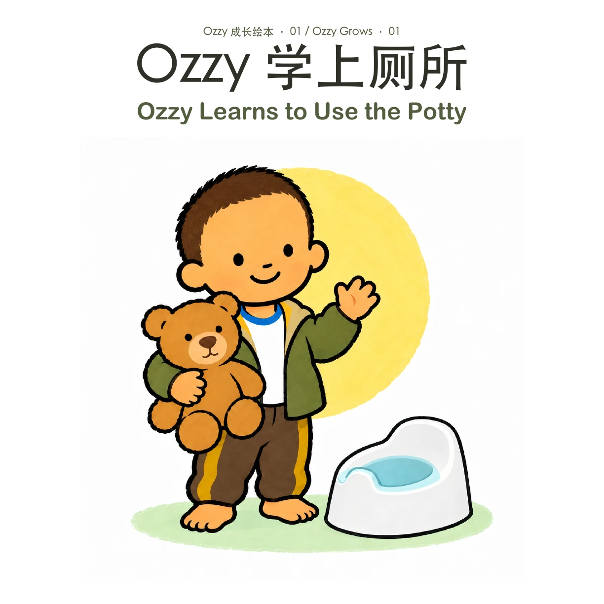

成长绘本 / LITTLE EVERYDAY STORIES
Ozzy 学上厕所
Ozzy Learns to Use the Potty
下载完整 PDF
中英双语 · 11 页 · 24.3 MB

也可以用键盘 ← → 翻页
成长绘本 / LITTLE EVERYDAY STORIES
Ozzy Learns to Use the Potty
中英双语 · 11 页 · 24.3 MB

也可以用键盘 ← → 翻页